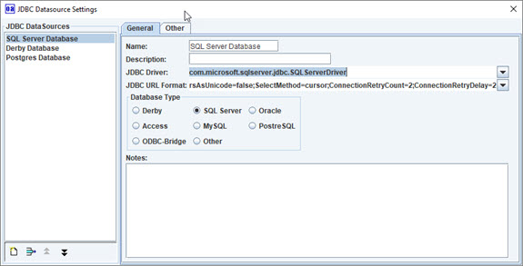
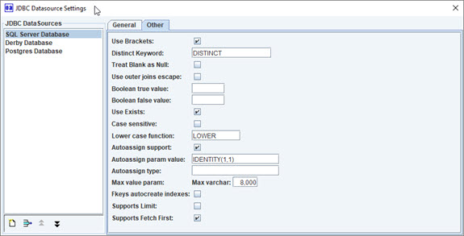

JDBC Setup Editor
Database JDBC information.
Additional database information.

JDBC DataSources, General tab.
- JDBC Data Sources - list of created.
- New button
- Remove button
- Name
- Description
- JDBC Driver
- JDBC URL
- Database Type

JDBC DataSources, Other tab. Custom setting.
- Use Brackets for table, columns.
- Distinct Keyword
- Treat Blank as Null
- Use outer joins escape
- Boolean true value
- Boolean false value
- Use Exists
- Case sensitive
- Lower case function
- Autoassign support
- Autoassign param value
- Autoassign type
- Max varchar
- Fkeys autocreate indexes
- Supports Limit
- Supports Fetch First